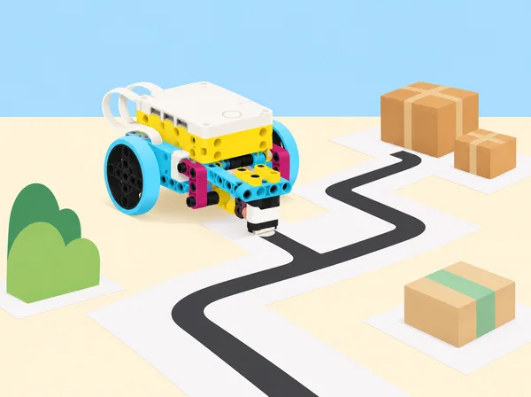
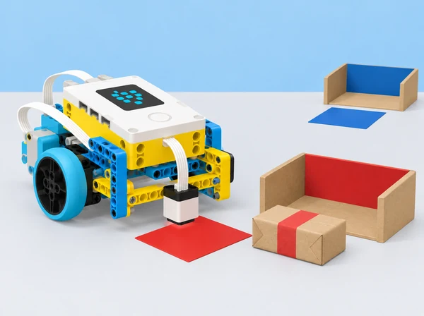

Sensors al servei de la biblioteca
🏷️ Sensors i logística escolar
🌱 Situació, repte i intenció
La biblioteca és un escenari didàctic: no es desplacen llibres reals ni es fa cap afirmació que aquest prototip siga segur o apte per a un servei autònom.
🎯 Aprenentatges i vocabulari
- Relacionar una lectura de sensor amb una regla i una resposta segura del robot.
- Calibrar sensors amb casos coneguts i comparar dades abans de classificar o seguir una ruta.
- Integrar moviment, detecció i coordinació entre equips en una maqueta de logística escolar.
- Provar casos adversos i explicar les condicions en què el sistema s’atura o demana revisió humana.
🧰 Materials i preparació
Un set SPIKE Prime 45678 i dispositiu amb app per parella o equip; base mòbil, sensor de color, sensor de distància, targets de color mats, cinta de paper, cartó lleuger, capses de paper, regle i fulls de dades. El primer aparcament es resol sense sensor; el mini-repte següent incorpora el sensor de color.
Un sensor mesura allò per a què està dissenyat: el de color no reconeix etiquetes escrites ni determina identitats, i el de distància no detecta places, persones ni obstacles transparents amb fiabilitat garantida. Reviseu la lectura a la llum i superfície del centre i prepareu targetes o taules de dades impreses com a alternativa.
📅 Seqüència didàctica
Els sensors activen respostes (90 min)
Fase 1 · Activem i prediem
Predigueu quan s’ha d’aturar una base: en acostar-se a una paret més que el llindar acordat o en detectar una targeta de color determinada.
Fase 2 · Explorem i construïm
Escriviu pseudocodi i programeu una condició amb sensor de distància o de color i un motor. Afegiu comentaris que expliquen la regla i l’aturada.
Fase 3 · Expliquem i registrem
Proveu una entrada esperada i una inesperada i anoteu predicció, lectura i resposta observada.
Fase 4 · Apliquem i millorem
Reviseu el llindar o la regla si la resposta no coincideix amb la predicció. Si el sensor o l’app no permeten l’exemple, useu una targeta manual i identifiqueu-la com a simulació.
Fase 5 · Comprovem i reflexionem
Sensors i dades (90 min)
Fase 1 · Activem i prediem
Predigueu a quina distància s’aturarà la base quan s’acoste a un mur de cartó i com pot canviar el resultat amb la potència del motor.
Fase 2 · Explorem i construïm
Escriviu pseudocodi i programeu l’aproximació fins que el sensor de distància indique la separació objectiu.
Fase 3 · Expliquem i registrem
Proveu diversos nivells de potència mantenint constants inici, distància objectiu, orientació i superfície; feu almenys tres intents per nivell. Anoteu distància final, error i temps.
Fase 4 · Apliquem i millorem
Calculeu mitjanes, representeu-les en una gràfica i reviseu el control si la base sobrepassa el punt abans de frenar.
Fase 5 · Comprovem i reflexionem
Ball i depuració per color (45 min)
Fase 1 · Activem i prediem
Planifiqueu una rutina rítmica amb senyal visual i predigueu com respondrà el robot a un color o seqüència de targetes.
Fase 2 · Explorem i construïm
Escriviu pseudocodi, dividiu-lo en parts i afegiu comentaris. Proveu primer un color, després un segon estat de moviment i finalment la seqüència completa.
Fase 3 · Expliquem i registrem
Reviseu instruccions i connexions, proveu un tram i afegiu funcionalitat gradualment. Anoteu la fallada, la predicció i la resposta observada.
Fase 4 · Apliquem i millorem
Canvieu una sola cosa i torneu a provar entrades esperades i inesperades. Comproveu si el ritme continua coherent.
Fase 5 · Comprovem i reflexionem
El laberint de la mediateca (90–135 min)
Fase 1 · Activem i prediem
En grups, dissenyeu una ruta de paper amb un màxim de tres girs. Predigueu quins punts dependran del sensor de color i quin punt activarà el de distància.
Fase 2 · Explorem i construïm
Afegiu una línia que el sensor puga seguir o detectar i una paret de cartó. Una base Driving Base amb el sensor de color cap avall executa el pseudocodi comentat.
Fase 3 · Expliquem i registrem
Un altre equip prova el recorregut. Afegiu un tram cada vegada i mesureu encerts, aturades i desviacions; compareu reacció davant la paret amb potència baixa i alta.
Fase 4 · Apliquem i millorem
Ajusteu la pista si la marca no es llig consistentment. Expliqueu quina part del disseny era ambigua o massa exigent i canvieu-la abans de repetir.
Fase 5 · Comprovem i reflexionem
Fàbrica de capses (90–135 min)
Fase 1 · Activem i prediem
Dibuixeu la fàbrica amb origen, preparació de paquet, destinacions i torns de retorn. Compareu maneres d’identificar, moure i separar capses; predigueu què ha de fer el robot amb un codi desconegut.
Fase 2 · Explorem i construïm
Construïu una base SPIKE amb sensor de color i empenyedor baix o safata simple de peces i cartó. El sensor llig una fitxa de codi al costat del paquet en l’origen; les condicions trien itinerari i el mecanisme trasllada una capsa lleugera.
Fase 3 · Expliquem i registrem
Escriviu pseudocodi per a lectura, classificació, transport i retorn i comenteu el codi. Afegiu senyal de preparació i lectura. Feu una prova inicial d’empenyiment a baixa velocitat en zona delimitada.
Fase 4 · Apliquem i millorem
Proveu tres codis vàlids, un de desconegut i dos cicles complets. El robot ha d’aturar-se i avisar davant d’un codi desconegut; reviseu també el punt on el paquet ix de la safata.
Fase 5 · Comprovem i reflexionem
Aparcament cooperatiu sense sensor (90–135 min)
Fase 1 · Activem i prediem
Marqueu places numerades i dos carrers d’entrada. Assigneu plaça i entrada a cada equip i preveieu com poden creuar-se les seqüències de dues bases.
Fase 2 · Explorem i construïm
Resoleu casos en quadrícula de paper respectant les regles: dues bases entren alhora, no s’aturen fora de plaça i només fan marxa arrere per eixir d’una plaça.
Fase 3 · Expliquem i registrem
Escriviu pseudocodi, calibreu distàncies, afegiu comentaris i acordeu senyals de coordinació entre equips. Programeu sense sensor.
Fase 4 · Apliquem i millorem
Quan les places estiguen plenes, trieu i programeu una regla d’eixida: ordre d’entrada, invers, sincronitzat o places imparelles/parelles. Mesureu desviacions abans de coordinar més robots.
Fase 5 · Comprovem i reflexionem
Aparcament per colors amb sensor (90–135 min)
Fase 1 · Activem i prediem
Assigneu cada plaça a una targeta roja, verda o blava i cada vehicle a una destinació. Predigueu quina serà la primera plaça lliure del color rebut.
Fase 2 · Explorem i construïm
Afegiu el sensor de color i una condició al programa. Manteniu les targetes planes, amb bon contrast, i calibreu la lectura segons la llum del lloc.
Fase 3 · Expliquem i registrem
Escriviu pseudocodi, comenteu qualsevol codi compartit i planifiqueu entrades coordinades des de dos costats. Anoteu plaça assignada i lectura detectada.
Fase 4 · Apliquem i millorem
Feu que les bases no travessen línies i prenguen la primera plaça lliure del color rebut. Trieu una regla d’eixida —per colors, ordre de plaça o invers— i proveu-la; reviseu els bloquejos.
Fase 5 · Comprovem i reflexionem
Professions de fabricació i logística (90 min)
Fase 1 · Activem i prediem
Observeu oficis de fabricació, transport, distribució i logística: conducció, magatzem, inventari, manteniment, operació CNC, planificació de rutes o cadena de subministrament. Predigueu quins rols cooperen en l’arribada d’una capsa.
Fase 2 · Explorem i construïm
Amb fonts públiques preparades per la docent, compareu tasques, habilitats, formació i col·laboració entre rols.
Fase 3 · Expliquem i registrem
En grup, representeu com una capsa passa per les diferents parts del sistema. Prepareu una presentació d’un minut.
Fase 4 · Apliquem i millorem
Relacioneu classificació, ruta i coordinació amb el treball real. Feu visibles la presa de decisions, seguretat, supervisió i contribució humana; no reduïu el sector als robots.
Fase 5 · Comprovem i reflexionem

🧪 Evidències i avaluació
Guardeu diagrames de ruta i fàbrica, pseudocodi, codi comentat, graella de lectures i parades, taula/gràfica de potència i error, registres de depuració, pla d’entrades simultànies i norma d’eixida. En la fàbrica, anoteu els tres codis provats en dos cicles, quants paquets arriben a la destinació correcta, si la base torna a l’origen i què fa davant d’una etiqueta desconeguda;
una prova compta com a autònoma només si el robot completa classificació, transport i retorn sense que una persona el guie durant el recorregut. Valoreu la coherència entre entrada, condició i acció; la precisió en l’ús de dades; les proves amb casos esperats i no esperats; l’atribució del codi compartit; i la coordinació que evita col·lisions en la maqueta. Autoavaluació d’equip: comunicació, torns, inventari i gestió del temps, escala d’1 a 3 i un canvi concret per a la pròxima sessió.
♿ Participació, accessibilitat i seguretat
Les tasques de conducció tenen alternativa de quadrícula i pseudocodi; oferiu rols de programació, disseny, calibratge i observació. Useu fitxes i capses lleugeres, freneu abans d’ajustar el model i manteniu una sola base en moviment per carril quan no es puga controlar la sincronització. No useu noms, matrícules ni dades de mobilitat de persones. L’escenari és una simulació educativa de logística, no un sistema d’aparcament, seguretat o transport en servei.
🔗 Referents i adaptació
Adapta les huit lliçons de la unitat 5 Sensors del curs LEGO Education *Foundations of Physical Computing*: Sensors Trigger Reactions, Sensors and Data, Dance to Debug, Maze, Factory Robot, Parking Lot, Mini-Challenge: Parking Lot i Connecting to Careers: Manufacturing and Transportation, Distribution & Logistics.
Manté les condicions sensor–motor, parada per distància i color, registre de potència/precisió, depuració i ritme, laberint autònom amb dos sensors, classificació, transport autònom de paquets lleugers i retorn a l’origen amb senyal i pseudocodi, primera tasca d’aparcament sense sensor, el mini-repte d’aparcament amb colors i la investigació professional; context, trajectes, capses i instruments són propis. Els models i instruccions d’app LEGO no es reprodueixen ací.